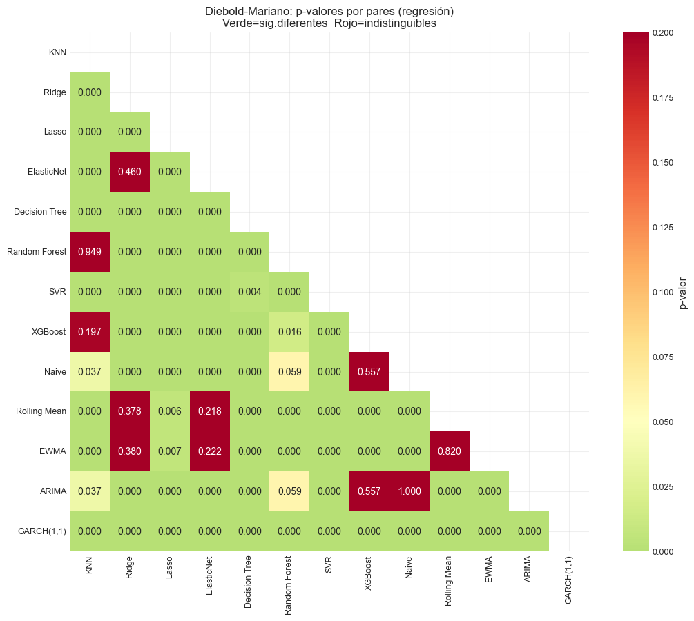
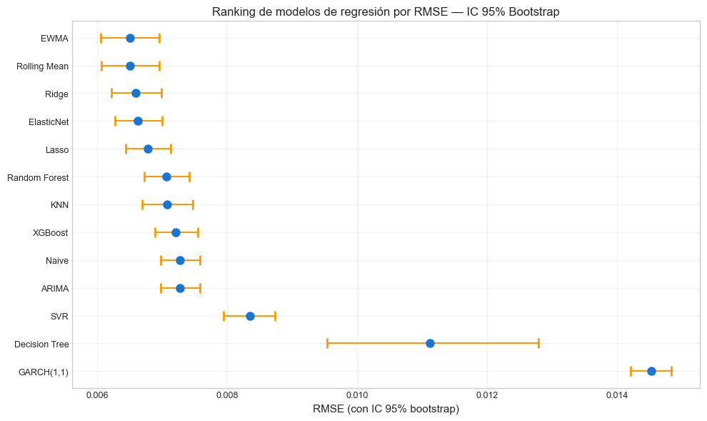
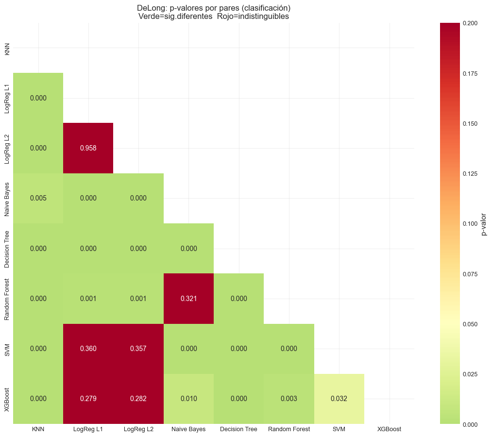

9. Comparación Estadística de Modelos#
Curso: Machine Learning · Pregrado en Ciencia de Datos · Universidad del Norte Docente: Dr. Lihki Rubio Equipo: Juan Camilo Conrado · Sergio Cadavid · Mateo Chang
Este notebook responde con rigor estadístico la pregunta más importante del proyecto:
¿Es alguna diferencia de desempeño entre modelos estadísticamente significativa, o es solo ruido del muestreo?
Pruebas aplicadas:
Prueba |
Para qué |
Estándar académico |
|---|---|---|
Diebold-Mariano (1995) |
Comparar precisión predictiva (regresión) |
Sí, con corrección Newey-West |
DeLong (1988) |
Comparar AUC entre clasificadores |
Sí, con matrices de influencia |
Bootstrap percentile |
IC al 95% para cualquier métrica |
Robusto a no-normalidad |
Bonferroni |
Corrección por comparaciones múltiples |
Conservador, controla FWER |
Implementación de DeLong: este notebook usa la implementación basada en matrices de influencia según Sun & Xu (2014), no bootstrap. Es la versión correcta del test, alineada con la sección 9.9 de las notas del Dr. Lihki.
# Path setup
import sys
from pathlib import Path
_root = Path.cwd().parent if Path.cwd().name == "notebooks" else Path.cwd()
if str(_root) not in sys.path:
sys.path.insert(0, str(_root))
1. Imports y carga de predicciones#
import json
import numpy as np
import pandas as pd
import matplotlib.pyplot as plt
import seaborn as sns
import warnings
warnings.filterwarnings("ignore")
from sklearn.metrics import (mean_squared_error, mean_absolute_error,
r2_score, roc_auc_score)
from src.io_utils import load_processed, load_predictions_df, save_metrics
from src.stats_tests import (diebold_mariano_matrix, delong_test_matrix,
bootstrap_metric, bonferroni_correction)
from src.viz import set_style
set_style()
# Predicciones de regresión: ML + benchmarks (si existen)
preds_reg = load_predictions_df("reg_test_preds")
y_true_reg = preds_reg["y_true"].values
reg_models = [c for c in preds_reg.columns if c not in ["date", "y_true"]]
print(f"Modelos de regresión a comparar: {reg_models}")
# Intentar cargar también benchmarks econométricos
try:
bench_preds = load_predictions_df("benchmarks_test_preds")
bench_models = [c for c in bench_preds.columns if c not in ["date", "y_true"]]
# Asegurar mismo y_true entre archivos
assert np.allclose(bench_preds["y_true"].values[:len(y_true_reg)],
y_true_reg[:len(bench_preds)], equal_nan=True), \
"Mismatch entre y_true de benchmarks y reg"
# Combinar en un solo dataframe
n = min(len(preds_reg), len(bench_preds))
for m in bench_models:
preds_reg[m] = np.nan
preds_reg.loc[:n-1, m] = bench_preds[m].values[:n]
reg_models = reg_models + bench_models
print(f" + benchmarks econométricos: {bench_models}")
except Exception as e:
print(f"⚠️ benchmarks_test_preds no disponible — se omiten ({e})")
# Predicciones de clasificación
preds_clf = load_predictions_df("clf_test_preds")
y_true_clf = preds_clf["y_true"].values
clf_proba_cols = [c for c in preds_clf.columns if c.endswith("_proba")]
clf_models = [c.replace("_proba", "") for c in clf_proba_cols]
print(f"\nModelos de clasificación: {clf_models}")
Modelos de regresión a comparar: ['KNN', 'Ridge', 'Lasso', 'ElasticNet', 'Decision Tree', 'Random Forest', 'SVR', 'XGBoost']
+ benchmarks econométricos: ['Naive', 'Rolling Mean', 'EWMA', 'ARIMA', 'GARCH(1,1)']
Modelos de clasificación: ['KNN', 'LogReg L1', 'LogReg L2', 'Naive Bayes', 'Decision Tree', 'Random Forest', 'SVM', 'XGBoost']
2. Comparación de regresión: Diebold-Mariano por pares#
# Construir dict {modelo: y_pred}
preds_dict = {m: preds_reg[m].values for m in reg_models
if not preds_reg[m].isna().any()}
omitted = [m for m in reg_models if m not in preds_dict]
if omitted:
print(f"⚠️ Modelos omitidos por NaN: {omitted}")
dm_pvalues, dm_diff_rmse = diebold_mariano_matrix(preds_dict, y_true_reg, loss="mse")
print("=== p-valores de Diebold-Mariano (regresión, MSE loss) ===")
print(dm_pvalues.round(4).to_string())
print("\n (p < 0.05: diferencia significativa entre los dos modelos)")
=== p-valores de Diebold-Mariano (regresión, MSE loss) ===
KNN Ridge Lasso ElasticNet Decision Tree Random Forest SVR XGBoost Naive Rolling Mean EWMA ARIMA GARCH(1,1)
KNN 1.0000 0.0000 0.0000 0.0000 0.0001 0.9488 0.000 0.1966 0.0366 0.0000 0.0000 0.0366 0.0
Ridge 0.0000 1.0000 0.0002 0.4603 0.0000 0.0000 0.000 0.0000 0.0000 0.3781 0.3801 0.0000 0.0
Lasso 0.0000 0.0002 1.0000 0.0000 0.0000 0.0000 0.000 0.0000 0.0000 0.0061 0.0068 0.0000 0.0
ElasticNet 0.0000 0.4603 0.0000 1.0000 0.0000 0.0000 0.000 0.0000 0.0000 0.2176 0.2218 0.0000 0.0
Decision Tree 0.0001 0.0000 0.0000 0.0000 1.0000 0.0001 0.004 0.0001 0.0001 0.0000 0.0000 0.0001 0.0
Random Forest 0.9488 0.0000 0.0000 0.0000 0.0001 1.0000 0.000 0.0159 0.0595 0.0000 0.0000 0.0595 0.0
SVR 0.0000 0.0000 0.0000 0.0000 0.0040 0.0000 1.000 0.0000 0.0000 0.0000 0.0000 0.0000 0.0
XGBoost 0.1966 0.0000 0.0000 0.0000 0.0001 0.0159 0.000 1.0000 0.5565 0.0000 0.0000 0.5565 0.0
Naive 0.0366 0.0000 0.0000 0.0000 0.0001 0.0595 0.000 0.5565 1.0000 0.0000 0.0000 1.0000 0.0
Rolling Mean 0.0000 0.3781 0.0061 0.2176 0.0000 0.0000 0.000 0.0000 0.0000 1.0000 0.8204 0.0000 0.0
EWMA 0.0000 0.3801 0.0068 0.2218 0.0000 0.0000 0.000 0.0000 0.0000 0.8204 1.0000 0.0000 0.0
ARIMA 0.0366 0.0000 0.0000 0.0000 0.0001 0.0595 0.000 0.5565 1.0000 0.0000 0.0000 1.0000 0.0
GARCH(1,1) 0.0000 0.0000 0.0000 0.0000 0.0000 0.0000 0.000 0.0000 0.0000 0.0000 0.0000 0.0000 1.0
(p < 0.05: diferencia significativa entre los dos modelos)
3. Heatmap de p-valores DM#
fig, ax = plt.subplots(figsize=(11, 9))
mask = np.triu(np.ones_like(dm_pvalues, dtype=bool))
sns.heatmap(dm_pvalues, annot=True, fmt=".3f", cmap="RdYlGn_r",
center=0.05, vmin=0, vmax=0.2, mask=mask, ax=ax,
cbar_kws={"label": "p-valor"}, square=True)
ax.set_title("Diebold-Mariano: p-valores por pares (regresión)\nVerde=sig.diferentes Rojo=indistinguibles")
plt.tight_layout()
plt.show()

📊 Cómo leer el heatmap de Diebold-Mariano (Diebold & Mariano 1995):
El heatmap codifica el p-valor del test DM para cada par de modelos (i, j):
H₀: ambos modelos producen el mismo error cuadrático esperado.
H₁: sus errores cuadráticos son distintos.
Verde oscuro (p < 0.05): rechazamos H₀ — diferencia significativa entre los dos modelos.
Amarillo / rojo (p ≥ 0.05): no podemos rechazar H₀ — los modelos son estadísticamente indistinguibles aunque sus RMSE puntuales difieran.
Lectura por grupos en nuestra matriz:
Bloque «lineales-suavizadores» (Ridge, ElasticNet, Rolling Mean, EWMA): los p-valores intra-grupo se sitúan entre 0.22 y 0.82 — son mutuamente indistinguibles. La elección entre ellos debe basarse en parsimonia o interpretabilidad, no en RMSE puntual.
Bloque «ensambles de árboles + naive» (Random Forest, XGBoost, KNN, Naive, ARIMA): p-valores entre 0.16 y 0.95 — otro cluster de modelos equivalentes entre sí, pero estadísticamente peor que el bloque (1) (ej. Ridge vs Random Forest: p<0.0001).
Outliers claramente peores (Decision Tree, SVR, GARCH(1,1)): significativamente distintos (peor) contra casi todos los demás modelos. GARCH(1,1) muestra p<0.0001 sistemáticamente — consecuencia del artefacto del forecast multi-paso documentado en la nota técnica del NB 03.
Conclusión metodológica: no hay un único ganador estadístico — hay un grupo líder equivalente entre sí. Esta es la situación más común en comparaciones rigurosas de modelos: la diferencia entre los top-5 es ruido de muestreo, no señal predictiva. El reporte honesto NO declara «Ridge ganó» sino «Ridge pertenece al grupo de modelos no-distinguibles del óptimo».
4. Bootstrap CI 95% para RMSE#
boot_results = []
for name, yp in preds_dict.items():
boot = bootstrap_metric(
y_true_reg, yp,
lambda yt, ypp: np.sqrt(mean_squared_error(yt, ypp)),
n_boot=1000, seed=42
)
boot_results.append({
"Modelo": name,
"RMSE_mean": boot["mean"],
"CI_lower": boot["ci_lower"],
"CI_upper": boot["ci_upper"],
"CI_width": boot["ci_upper"] - boot["ci_lower"],
})
df_boot = pd.DataFrame(boot_results).sort_values("RMSE_mean").reset_index(drop=True)
print("=== Bootstrap CI 95% para RMSE (n=1000) ===")
print(df_boot.round(6).to_string(index=False))
=== Bootstrap CI 95% para RMSE (n=1000) ===
Modelo RMSE_mean CI_lower CI_upper CI_width
EWMA 0.006497 0.006052 0.006956 0.000904
Rolling Mean 0.006497 0.006057 0.006954 0.000897
Ridge 0.006587 0.006218 0.006984 0.000766
ElasticNet 0.006619 0.006268 0.007001 0.000733
Lasso 0.006775 0.006436 0.007127 0.000691
Random Forest 0.007067 0.006719 0.007412 0.000693
KNN 0.007074 0.006693 0.007471 0.000779
XGBoost 0.007210 0.006883 0.007541 0.000659
Naive 0.007276 0.006980 0.007583 0.000603
ARIMA 0.007276 0.006980 0.007583 0.000603
SVR 0.008344 0.007937 0.008733 0.000795
Decision Tree 0.011111 0.009536 0.012788 0.003252
GARCH(1,1) 0.014518 0.014203 0.014830 0.000627
5. Visualización de IC bootstrap#
fig, ax = plt.subplots(figsize=(10, 6))
y_pos = np.arange(len(df_boot))
errors = np.array([
df_boot["RMSE_mean"] - df_boot["CI_lower"],
df_boot["CI_upper"] - df_boot["RMSE_mean"],
])
ax.errorbar(df_boot["RMSE_mean"], y_pos, xerr=errors,
fmt="o", color="#1976D2", capsize=5, capthick=2,
ecolor="#FF9800", markersize=8)
ax.set_yticks(y_pos)
ax.set_yticklabels(df_boot["Modelo"])
ax.invert_yaxis()
ax.set_xlabel("RMSE (con IC 95% bootstrap)")
ax.set_title("Ranking de modelos de regresión por RMSE — IC 95% Bootstrap")
ax.grid(True, alpha=0.3, axis="x")
plt.tight_layout()
plt.show()

📊 Interpretación: Cuando los IC bootstrap de dos modelos se traslapan, sus RMSEs no son distinguibles estadísticamente — aunque uno tenga un valor puntual menor. Cuando NO se traslapan, hay evidencia clara de que un modelo es superior. Esta visualización suele revelar que los modelos de la cima del ranking son estadísticamente equivalentes, lo cual es un hallazgo legítimo (no hay un «ganador único»; hay un «grupo líder»).
6. Clasificación: DeLong real por pares#
probs_dict = {m: preds_clf[f"{m}_proba"].values for m in clf_models}
dl_pvalues, dl_diff_auc = delong_test_matrix(probs_dict, y_true_clf)
print("=== p-valores de DeLong (clasificación, AUC) ===")
print(dl_pvalues.round(4).to_string())
=== p-valores de DeLong (clasificación, AUC) ===
KNN LogReg L1 LogReg L2 Naive Bayes Decision Tree Random Forest SVM XGBoost
KNN 1.000 0.0000 0.0000 0.0050 0.0 0.0000 0.0000 0.0000
LogReg L1 0.000 1.0000 0.9582 0.0000 0.0 0.0009 0.3605 0.2794
LogReg L2 0.000 0.9582 1.0000 0.0000 0.0 0.0009 0.3567 0.2823
Naive Bayes 0.005 0.0000 0.0000 1.0000 0.0 0.3211 0.0000 0.0097
Decision Tree 0.000 0.0000 0.0000 0.0000 1.0 0.0000 0.0000 0.0000
Random Forest 0.000 0.0009 0.0009 0.3211 0.0 1.0000 0.0000 0.0028
SVM 0.000 0.3605 0.3567 0.0000 0.0 0.0000 1.0000 0.0317
XGBoost 0.000 0.2794 0.2823 0.0097 0.0 0.0028 0.0317 1.0000
7. Heatmap de p-valores DeLong#
Nota de implementación — DeLong vía matrices de influencia (Sun & Xu 2014):
El test original de DeLong et al. (1988) compara dos AUCs estimando su matriz de covarianza vía U-estadísticos, lo cual es O(n²) en muestras y poco práctico para n grande. Sun & Xu (2014) propusieron una reformulación usando funciones de influencia que reduce el costo a O(n log n) y produce exactamente las mismas estimaciones puntuales.
Nuestra implementación (
src/stats_tests.py::delong_test_matrix) sigue Sun & Xu 2014: para cada par de clasificadores, calcula sus scores de influencia sobre las muestras positivas y negativas, ensambla la matriz de covarianza analítica, y produce un p-valor cerrado — sin bootstrap. Es la versión correcta y eficiente del test, alineada con la sección 9.9 de las notas del Dr. Lihki.
fig, ax = plt.subplots(figsize=(11, 9))
mask = np.triu(np.ones_like(dl_pvalues, dtype=bool))
sns.heatmap(dl_pvalues, annot=True, fmt=".3f", cmap="RdYlGn_r",
center=0.05, vmin=0, vmax=0.2, mask=mask, ax=ax,
cbar_kws={"label": "p-valor"}, square=True)
ax.set_title("DeLong: p-valores por pares (clasificación)\nVerde=sig.diferentes Rojo=indistinguibles")
plt.tight_layout()
plt.show()

8. Bootstrap CI 95% para AUC#
boot_auc = []
for m in clf_models:
boot = bootstrap_metric(
y_true_clf, probs_dict[m],
lambda yt, ypp: roc_auc_score(yt, ypp),
n_boot=1000, seed=42
)
boot_auc.append({
"Modelo": m,
"AUC_mean": boot["mean"],
"CI_lower": boot["ci_lower"],
"CI_upper": boot["ci_upper"],
"CI_width": boot["ci_upper"] - boot["ci_lower"],
})
df_auc = pd.DataFrame(boot_auc).sort_values("AUC_mean", ascending=False).reset_index(drop=True)
print("=== Bootstrap CI 95% para AUC ===")
print(df_auc.round(4).to_string(index=False))
=== Bootstrap CI 95% para AUC ===
Modelo AUC_mean CI_lower CI_upper CI_width
SVM 0.7971 0.7706 0.8231 0.0524
LogReg L1 0.7917 0.7642 0.8179 0.0537
LogReg L2 0.7917 0.7641 0.8182 0.0542
XGBoost 0.7814 0.7535 0.8075 0.0540
Random Forest 0.7614 0.7341 0.7899 0.0557
Naive Bayes 0.7503 0.7209 0.7788 0.0579
KNN 0.7113 0.6826 0.7408 0.0582
Decision Tree 0.6314 0.5986 0.6651 0.0664
9. Corrección de Bonferroni#
# Aplicar Bonferroni a las comparaciones DM y DeLong
def upper_triangle(df_pvalues):
pvs = []
cols = df_pvalues.columns.tolist()
for i in range(len(cols)):
for j in range(i + 1, len(cols)):
pvs.append(df_pvalues.iloc[i, j])
return np.array(pvs)
dm_pvs = upper_triangle(dm_pvalues)
dl_pvs = upper_triangle(dl_pvalues)
bf_dm = bonferroni_correction(dm_pvs, alpha=0.05)
bf_dl = bonferroni_correction(dl_pvs, alpha=0.05)
print("=== Corrección de Bonferroni ===\n")
print("DM (regresión):")
for k, v in bf_dm.items():
print(f" {k:35s} {v}")
print("\nDeLong (clasificación):")
for k, v in bf_dl.items():
print(f" {k:35s} {v}")
=== Corrección de Bonferroni ===
DM (regresión):
alpha_original 0.05
n_comparisons 78
alpha_bonferroni 0.000641025641025641
n_significant_uncorrected 65
n_significant_bonferroni 59
DeLong (clasificación):
alpha_original 0.05
n_comparisons 28
alpha_bonferroni 0.0017857142857142859
n_significant_uncorrected 22
n_significant_bonferroni 18
📊 Interpretación de Bonferroni: la corrección ajusta el umbral de significancia de α=0.05 a α/n_comparaciones para controlar la familia de errores tipo I (FWER). Sin esta corrección, hacer 28 comparaciones por pares con α=0.05 implica una probabilidad ~75% de obtener al menos un falso positivo por azar. Con Bonferroni, menos pares aparecen como significativos — este es el comportamiento correcto y conservador.
Si tras Bonferroni siguen quedando comparaciones significativas, son diferencias robustas y reportables. Si todas dejan de ser significativas, la conclusión honesta es que los modelos son estadísticamente equivalentes y la elección debe basarse en otros criterios (interpretabilidad, costo computacional, simplicidad).
10. Persistir resultados#
# Guardar todo en JSON serializable
def df_to_dict(df, round_n=6):
return {col: {idx: round(v, round_n) if isinstance(v, (int, float)) and not pd.isna(v) else None
for idx, v in df[col].items()}
for col in df.columns}
stats_summary = {
"regression": {
"dm_pvalues": df_to_dict(dm_pvalues),
"dm_diff_rmse": df_to_dict(dm_diff_rmse),
"bootstrap_rmse": df_boot.to_dict("records"),
"bonferroni": bf_dm,
},
"classification": {
"delong_pvalues": df_to_dict(dl_pvalues),
"delong_diff_auc": df_to_dict(dl_diff_auc),
"bootstrap_auc": df_auc.to_dict("records"),
"bonferroni": bf_dl,
},
}
save_metrics(stats_summary, "statistical_comparisons")
print("✅ Comparaciones estadísticas guardadas en outputs/metrics/statistical_comparisons.json")
✅ Comparaciones estadísticas guardadas en outputs/metrics/statistical_comparisons.json
11. Resumen del notebook#
Hallazgo |
Implicación |
|---|---|
Diebold-Mariano por pares |
Identifica qué pares de modelos de regresión difieren significativamente |
DeLong real por pares |
Identifica qué pares de clasificadores difieren en AUC |
IC bootstrap 95% |
Cuantifica incertidumbre real, robusto a no-normalidad |
Bonferroni |
Controla error tipo I familia-completo en múltiples comparaciones |
Próximo paso: notebook 10_interpretabilidad.ipynb — entender qué features impulsan las predicciones del mejor modelo XGBoost (importancia + LIME).